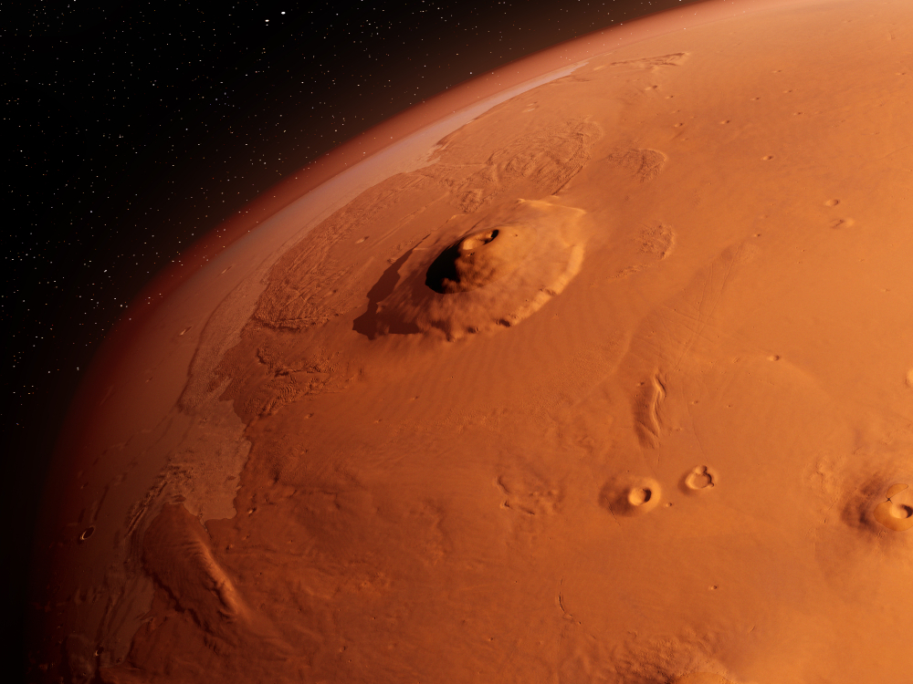
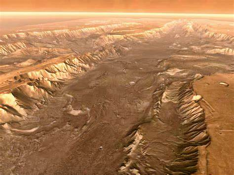
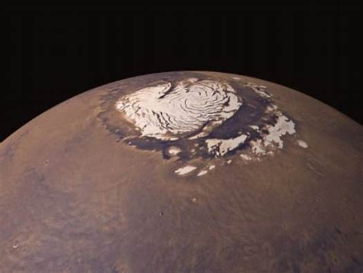

Olympus Mons
Olympus Mons is the tallest volcano in the solar system and one of the most prominent landmarks on Mars. It stands at a staggering height of 69,841 feet (21.287 kilometers).
Valles Marineris
Valles Marineris is a vast canyon system on Mars, stretching over 4,000 kilometers in length and up to 7 kilometers in depth. It's a breathtaking geological feature.
The Martian Polar Ice Caps
Mars has polar ice caps at both its north and south poles. These ice caps consist of water and carbon dioxide ice and are a striking feature of the Martian landscape.
